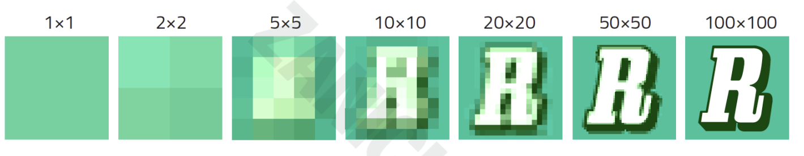
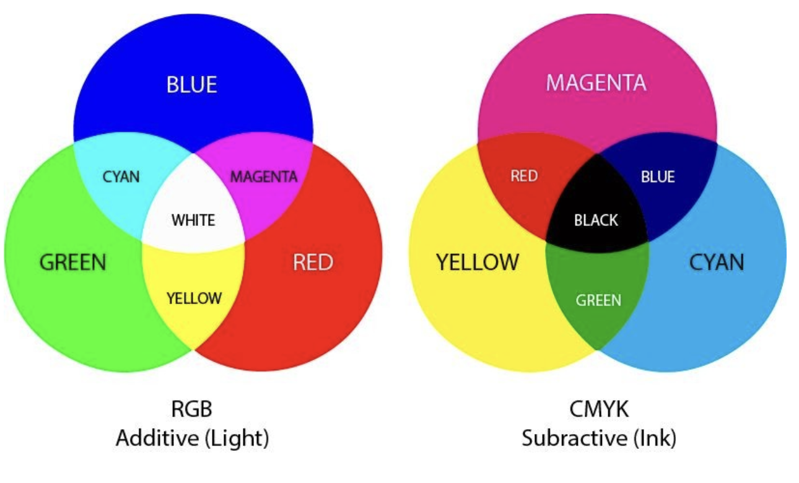

Digitalizzare immagini
Digitalizzare un'immagine significa trasformare la luce che entra nella nostra fotocamera (e che ci permette di vedere forme e colori) in una serie di numeri
Per fare ciò dovete immaginare che l'immagine sia divisa in tante "caselle" uguali tra di loro come una griglia, ognuna di queste caselle si chiama pixel ( Ad esempio, la fotocamera del vostro cellulare quanti pixel ha? se ha 60 Mpx significa che ogni volta che scattate una foto l'immagine è dapprima divisa in 60 milioni di pixel )
Ogni pixel può assumere un solo colore, quindi ognuno di loro verà tradotto in un numero che rappresenta il colore che più di tutti è presente in quel pixel
La qualità di una foto digitale dipende dalla sua risoluzione, cioè dal numero di pixel del sensore della fotocamera.
Domanda : che differenza c'è quindi tra una foto scattata a 100 px e una a 60 Mpx? quale delle due sembrerà "quadrettata" e poco simile alla realtà?

Come detto in precedenza ad ogni pixel viene associato un colore, attraverso una codifica che si chiama RGB (Red Green Blue).
Ogni colore può essere rappresentato come una somma di intensità di luce di ognuo dei 3 colori primari della sintesi additiva, così chiamata perché la somma delle 3 componenti al massimo da come risultato il BIANCO.
Quando vediamo una foto nel monitor del pc riproduciamo i colori in ogni pixel aumentando o diminuendo una o tutte le 3 componenti, nel caso del colore bianco le 3 intensità sono tutte la massimo.
Ognuo dei 3 colori è rappresentato da un byte ( 8 bit ), quindi ogni pixel è rappresentato da 3 byte ( 24 bit ) e ogni colore è una combinazione di valori

1111111 è il valore più grande che può assumere ogni byte
Ma cosa succede quando vogliamo stampare una foto? Perché le stampanti a cartucce non hanno i colori RGB e invece troviamo le cartucce Ciano (C, Cyan), Magenta (M) e Giallo (Y, Yellow)
Quando dobbiamo portare un'immagine su carta non emettiamo più luce (come nel caso del monitor ) ma la luce sarà riflessa su carta.
In questo caso i colori hanno una resa milgiore se composti utilizzando come basi i colori primari della sintesi sottrattiva, così chiamata perché "ruba luce" e la loro somma fa NERO.
Significa che se noi avessimo 3 lampade di quei 3 colori e le accendessimo tutte insieme avremmo il buio!!
N.B. : anche se usassimo i colori primari RGB mischiati insieme avremmo un colore scuro (tipo un marroncino) ma in generale i colori sono un pò sbiancati, ed è difficile ottenere colori vivaci, proprio a causa del "furto della luce"
Molte volte, quasi sempre in realtà, accanto alle cartucce colorate c'è sempre una cartuccia del Nero ( K , dal termine inglese key, poiché il nero è colore chiave o importante nella stampa di anni fa). Ciò dipende dal fatto che mischiando i 3 colori non si ottengono mai tinte scure precise e in generale aggiungendo nero si ottengono molte più tonalità di colore per rendere la stampa sempre più vicina all'originale in foto

In sintesi:
-
RGB (Red, Green, Blue)
- Dove viene usato: nei dispositivi che emettono luce, come monitor, televisori, smartphone.
- Modalità di colore: sintesi additiva (i colori si formano aggiungendo luce).
- Come funziona: mescolando i colori rosso, verde e blu alla massima intensità, si ottiene il bianco.
- Gamma cromatica: RGB ha una gamma di colori più ampia (più colori) rispetto a CMYK, rendendo i colori più vivaci su schermo.
- Utilizzo: ideale per immagini digitali, grafica web, video e tutto ciò che si visualizza su schermo.
-
CMYK (Cyan, Magenta, Yellow, Key/Black)
- Dove viene usato: nelle stampanti e nei sistemi di stampa, poiché utilizza pigmenti fisici.
- Modalità di colore: sintesi sottrattiva (i colori si ottengono assorbendo la luce riflessa).
- Come funziona: mescolando i colori ciano, magenta e giallo, si ottiene un colore molto scuro (quasi nero). Il nero viene aggiunto per ottenere neri più intensi e dettagli precisi.
- Gamma cromatica: CMYK ha una gamma cromatica più ridotta rispetto a RGB, quindi alcuni colori appaiono meno vivaci su carta.
- Utilizzo: adatto per stampe fisiche su carta, come libri, poster, e tutto ciò che deve essere stampato.
Esercitati e gioca online on l'RGB!! - 1
Esercitati e gioca online on l'RGB!! - 2
Mappa concettuale
flowchart LR
A[Digitalizzazione delle Immagini] --> B[Pixel]
B --> C[Numero di Pixel]
C --> D[Qualità]
C --> E[Risoluzione]
A --> F[Codifica RGB]
F --> G[Usato per dispositivi luminosi]
F --> H[Sintesi Additiva]
F --> I[Colori: Rosso, Verde, Blu]
F --> J[Somma Massima = Bianco]
F --> K[Gamma Cromatica Ampia]
F --> L[Utilizzo: Monitor, TV, Smartphone]
A --> M[Codifica CMYK]
M --> N[Usato per la Stampa]
M --> O[Sintesi Sottrattiva]
M --> P[Colori: Ciano, Magenta, Giallo]
M --> Q[Somma = Colore Scuro ,quasi Nero]
M --> R[Cartuccia Nero K per neri più intensi]
M --> S[Gamma Cromatica Ridotta]
M --> T[Utilizzo: Libri, Poster, Stampe]
A --> U[Conversione Colori]
U --> V[RGB -> CMYK per la stampa]
U --> W[CMYK per colori più vicini all'originale su carta]